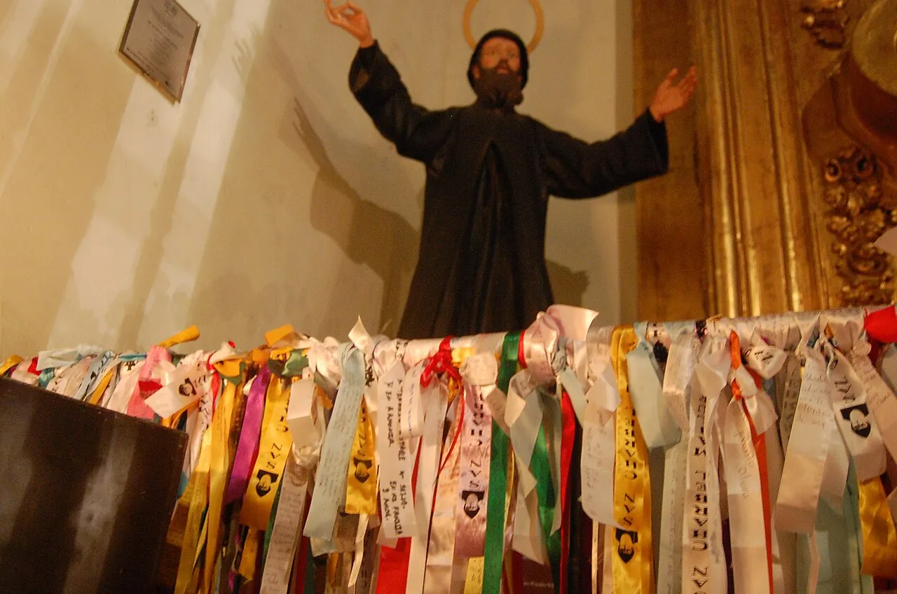

Saint Charbel Feast Day
Short answer: Saint Charbel is remembered on July 24 in Latin Catholic observance and on the third Sunday of July in the Maronite calendar: July 18 in 2027. Annaya is a central pilgrimage site; check your parish or the monastery for the current celebration schedule.
Saint Charbel is remembered on the third Sunday of July in the Maronite calendar and on July 24 in Latin Catholic observance. This guide explains the two dates, the Annaya shrine, and ways to keep the feast at home or with your parish.

Two Dates, One Feast
In Latin Catholic observance, Saint Charbel is remembered on July 24. The Maronite Eparchy of Australia names this date alongside the Maronite third-Sunday celebration. Check your local liturgical calendar and parish bulletin for the celebration near you.
In the Maronite calendar, Saint Charbel is remembered on the third Sunday of July. This date changes each year. A parish may publish its own celebration schedule; confirm that schedule before travelling.
Upcoming Maronite feasts (third Sunday of July):
- 2026: Sunday, July 19
- 2027: Sunday, July 18
- 2028: Sunday, July 16
- 2029: Sunday, July 15
- 2030: Sunday, July 21
July 24 is a fixed date; the third Sunday of July changes each year.
Why July, and Not the Day He Died?
Saints are often remembered on the anniversary of their death. Saint Charbel died on December 24, 1898, Christmas Eve, after falling ill during Mass on December 16. Vatican sources record those dates and his July 24 commemoration.
His priestly ordination took place on July 23, 1859, according to the Canadian Maronite eparchy. The nearness of that anniversary to July 24 does not establish why the date was chosen. The sources consulted here do not supply a calendar decision explaining the choice, so this guide does not claim an official reason.
The Feast at Annaya
The Monastery of Saint Maron at Annaya and the nearby hermitage are central places in Saint Charbel's life. His tomb is in the monastery sanctuary; he spent his final 23 years at the hermitage of Saints Peter and Paul. Our Annaya pilgrimage guide explains the places. The monastery's current notices, not this guide, should settle feast liturgies, opening hours and access.
- Prayer and liturgy: check the monastery’s published programme for the date and time of any vigil or Divine Liturgy.
- The tomb: leave space for quiet prayer and follow the sanctuary’s directions.
- Oil and devotional items: ask the community about current arrangements; this guide does not promise distribution or anointing.
- The hermitage: confirm access before walking up the hillside. The place belongs to a living religious community, not a fixed visitor timetable.
Keeping the Feast at Home
The feast can be kept anywhere. These are suggestions, not obligations or promises of a particular answer to prayer:
- Pray the novena. The traditional nine-day Saint Charbel Novena is traditionally prayed in the nine days leading to the feast - July 15-23 for the July 24 feast - closing on its eve with a specific intention entrusted to his intercession.
- Light a candle safely before an image of Saint Charbel, if that helps your prayer. Never leave it burning unattended.
- Join your parish. Attend the Divine Liturgy or Mass your community offers, checking its bulletin for the date and time.
- Anoint with the holy oil from Annaya, if your family has a vial: a small cross on the forehead with a short prayer for his intercession.
- Keep an hour of silence. Saint Charbel's own gift was silence; the silence of Annaya can be kept anywhere.
- Read his life aloud with the family - children remember the stories, and adults remember why they started praying. Our Story for Children was made for exactly this.
The Feast Around the World
The feast is remembered beyond Lebanon, wherever Maronite communities gather. The Australian eparchy describes Saint Charbel's devotion and encourages prayer, silence and faithful daily work. The Canadian eparchy records his life for its community. Local parishes publish their own liturgy and gathering details, so this page does not give crowd estimates or a worldwide event timetable. Explore Saint Charbel around the world for more about devotion outside Lebanon.
The Road to the Feast
- December 24, 1898: Saint Charbel dies at the hermitage of Saints Peter and Paul above Annaya, after falling ill during Mass eight days earlier.
- After his burial: monastery accounts describe light around the grave and the preservation of his body. These are attributed historical accounts, not a medical finding made by this website.
- Reports and inquiry: the monastery records examinations and accounts of favours associated with his intercession. Read each reported healing with its source and limits.
- December 5, 1965: Pope Paul VI beatifies Charbel at the close of the Second Vatican Council.
- October 9, 1977: Pope Paul VI canonizes him at a public Mass in Saint Peter's Square.
- Today: Latin Catholic observance remembers him on July 24; the Maronite celebration falls on the third Sunday of July.
The 22nd of Each Month
Alongside the annual feast, Annaya receives pilgrims on the 22nd of every month. Pope Leo XIV described this gathering in his December 2025 address at the tomb: pilgrims from different countries come to pray and renew their souls and bodies. The monthly gathering is distinct from the annual July observance; check the monastery’s current programme if you plan to travel.
Choosing the Date for Your Parish
The date question is practical before it is historical. A family looking at a Roman Catholic calendar will find July 24. A family planning with a Maronite parish may see the third Sunday in July. The Maronite Eparchy of Australia explicitly names both observances. Neither date means another community has forgotten Charbel. They are ways different churches mark the same saint. Check the parish's published liturgy times before you travel: the calendar tells you the date of the commemoration, not the hour of a local service.
In 2026 the third Sunday is July 19, five days before July 24. In 2027 it is July 18, six days earlier. The two dates will continue to move closer or farther apart as the third Sunday changes. If a parish celebrates on a neighboring weekend for its community, that local plan does not alter the calendar's date. The safest answer to "when is the feast near me?" is the parish's current bulletin, not a timetable copied from another year.
Saint Charbel died on Christmas Eve, December 24, 1898. The Canadian Maronite eparchy records that he was ordained on July 23, 1859, but the nearness of his ordination anniversary is not by itself proof of why the Roman calendar chose July 24. We know the dates; claims about the decision deserve a documentary source. Keep the history separate from a tidy but unsupported explanation.
What Annaya Adds to the Feast
Saint Maron Monastery in Annaya is where Charbel lived in community before entering the hermitage of Saints Peter and Paul in 1875. The monastery says its first buildings were completed in 1828, the year of his birth. Today the sanctuary includes the church around his tomb. The site draws pilgrims throughout the year; the feast brings their prayers into a shared celebration. The pilgrim may see a monastery, a tomb and a hillside path, but the meaning of the place is not a checklist of stops. It is where one man's hidden life became a public memory of prayer.
On December 1, 2025, Pope Leo XIV prayed at Charbel's tomb during his visit to Lebanon. His address at Annaya did not offer a recipe for obtaining favors. He spoke about silence in a noisy world, modesty amid display and a life less attached to possessions. He asked for peace in Lebanon and the wider region, and for conversion of hearts. That gives a pilgrim's feast prayer a broader horizon: bring a personal need, then remember the neighbors and communities carrying needs of their own.
A visit can be quiet even when the shrine is crowded. Read about the monastery before you go, leave space for prayer, and follow the directions posted by the community once there. Our Annaya guide can help with the places; the monastery's current notices should settle opening times, liturgies and access. Do not treat last year's feast schedule as a promise for this year. Someone who cannot travel still joins the observance through a local parish or prayer at home.
A Simple Way to Keep the Day
Start with the liturgy your church actually offers. If you can attend the Divine Liturgy or Mass, pray there for the people whose names you have been carrying. At home, read a short account of Charbel's life and sit quietly for a few minutes. You might pray: "Lord, teach me to listen to you, and hear my prayer for [name or need], through Saint Charbel's intercession. Amen." That sentence is our own suggestion, not a published liturgical prayer. You can also use the Annaya monastery's nine-day novena and its prayer text instead of inventing words when you have none.
For children, begin with a question: why did someone who sought silence become known so widely? Then tell the part of his story that they can hold onto, a boy who prayed in the hills, a monk who worked and prayed at Annaya, a hermit whose tomb became a place of pilgrimage. Avoid promising children that a specific petition will be granted if they pray enough. Gratitude and a willingness to help someone nearby belong beside requests for healing.
The feast need not be an elaborate event. You may call a relative, bring food to someone who is ill, or pray the rosary together. Silence can mean turning off the phone for ten minutes. None of these acts buys an answer from God. The Maronite Eparchy of Australia reflects on Charbel's daily work and prayer as a pattern for people at home and at work, not only for hermits. The most fitting observance may be a faithful act no one else sees.
Between July and the Next Feast
July is not the only time Annaya receives pilgrims. Pope Leo XIV noted that people from different countries come on the twenty-second of each month to pray. The monthly gathering and the annual feast have different rhythms: one returns through the year, the other lets the wider Church set aside a day for the saint. If you missed the July observance, you have not missed the chance to ask for Charbel's intercession.
The novena may be prayed before either local celebration, or at another time entirely. Count nine days according to the day on which you want to finish; if you aim for July 24, July 15 through July 23 are the nine days before it. If you follow a third-Sunday observance, count back from that year's Sunday rather than relying on the July 24 dates. Some people end their prayer on the eve, some on the day itself. Use the pattern that suits your parish and household without turning arithmetic into an obligation.
Carry the feast's attention into the months after it. Our pages on Charbel's hermitage, the story of his life and the reported miracles let you ask different questions. A reported healing should be read with its source and limitations; a letter from a visitor speaks in that visitor's voice. The feast honors a saint, but careful reading honors the real people attached to those accounts, too.
Frequently Asked Questions
When is the feast of Saint Charbel?
July 24 in Latin Catholic observance is a fixed date. In the Maronite calendar it is the third Sunday of July, a movable date: July 18 in 2027 and July 16 in 2028.
Why does Saint Charbel have two feast days?
The two dates reflect different liturgical calendars: July 24 in the Roman calendar and the third Sunday of July in the Maronite calendar. They commemorate the same saint.
Why is his feast not on the day he died?
Saint Charbel died on December 24, 1898, but his liturgical observances are in July. The calendar dates alone do not explain why July 24 was chosen; do not treat a proposed explanation as an official reason.
How is the feast kept at Annaya?
Pilgrims gather at the Monastery of Saint Maron in Annaya for prayer and liturgy. Reporting on the 2024 celebrations describes a Eucharistic procession, liturgy and a vigil at the tomb. Check the monastery's current schedule before traveling.
How can I keep the feast at home?
You can pray a nine-day novena, attend Mass, read Saint Charbel's life or spend a quiet time in prayer. July 15 to 23 is a nine-day period ending before the July 24 observance. Use a flameless candle, or supervise a real candle.
Sources
- Maronite Eparchy of Australia: the two July observances and daily prayer (21 July 2024)
- Saint Maron Monastery: Annaya, its history and the tomb sanctuary
- Holy See Press Office: Pope Leo XIV at Saint Charbel’s tomb (1 December 2025)
- Canadian Maronite eparchy: ordination and hermitage chronology; its beatification date is not used here
- Vatican City: July 24 commemoration and the dates of death, beatification and canonization
- EWTN News / ACI MENA: feast dates and Annaya celebrations, reporting from July 2024
- Catholic Culture: July 24 optional memorial in the Roman calendar